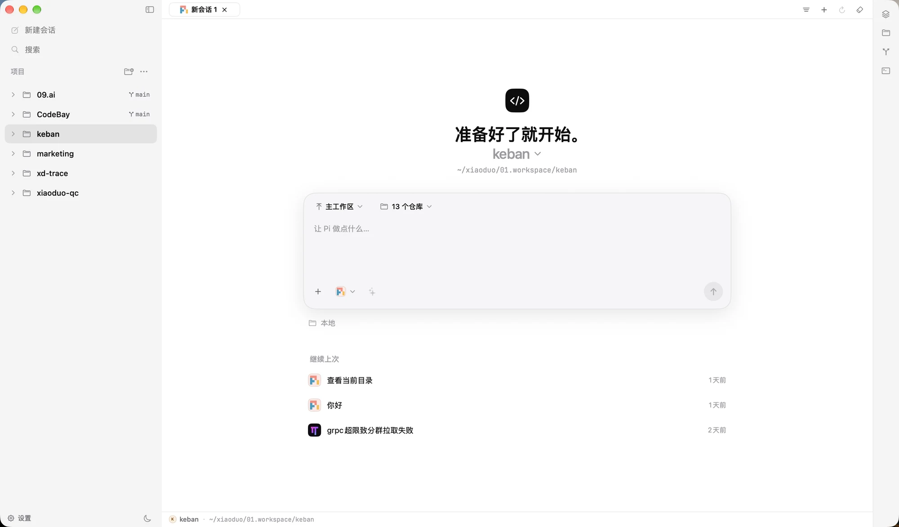

以前十几个终端，找不到的会话
现在一个窗口，全部归位
claude · keban
› 帮我排查 grpc 超限…
codex
$ codex resume ? 选哪一个…
opencode
› fix login bug
claude --resume
No conversation found with id
pi
› 重构 trace 模块
zsh
~/marketing $ _
claude · aptos
› 把这个改成 Go
codex
› 看下 Doris 慢查询
zsh
git status … 3 files
上次那个会话在哪？
两个 Agent 改了同一个文件？！
